4 Modèle additif
Le modèle additif (modèle GAM) peut être vu comme un compromis entre une modélisation linéaire et non paramétrique de la fonction de régression. Il suppose que cette fonction s’écrit \[m(x)=m(x_1,\dots,x_d)=\alpha+g_1(x_1)+\dots+g_d(x_d).\]
4.1 Pseudo backfitting
L’algorithme du backfitting est souvent utilisé pour estimer les composantes du modèle additif. Etant donné un échantillon \((x_i,y_i),i=1,\dots,n\) on note \(\bar{\mathbb Y}\) le vecteur des \(y_i\) et \(\mathbb X_k\) le vecteur contenant les observations de la variable \(k\) pour \(k=1,\dots,d\). L’algorithme se résume ainsi
- Initialisation : \(\widehat\alpha=\bar{\mathbb Y}\), \(\widehat g_k(x_k)=\bar{\mathbb X}_k\).
- Pour \(k=1,\dots,d\) :
- \(\mathbb Y^{(k)}=\mathbb Y-\widehat\alpha-\sum_{j\neq k}\widehat g_j(\mathbb X_j)\) (résidus partiels)
- \(\widehat g_k\) : lissage non paramétrique de \(\mathbb Y^{(k)}\) sur \(\mathbb X_k\).
- Répéter l’étape précédente tant que les \(\widehat g_k\) changent.
On propose dans cette partie d’utiliser cet algorithme pour estimer les paramètres du modèle linéaire en remplaçant le lissage non paramétrique par un estimateur MCO. On considère le modèle de régression linéaire
\[Y=\beta_0+\beta_1X_1+\beta_2X_2+\varepsilon\] avec \(X_1\) et \(X_2\) de lois uniformes sur \([0,1]\) et \(\varepsilon\) de loi \(\mathcal N(0,1)\) (\(\varepsilon\) est indépendante de \((X_1,X_2)^\prime\)).
Générer un échantillon \((x_i,y_i)\) de taille \(n=300\) selon le modèle ci-dessus pour \(\beta_0=1,\beta_1=3,\beta_2=5\).
set.seed(1234) n <- 300 X1<-runif(n) X2<-runif(n) bruit<-rnorm(n) Y<-1+3*X1+5*X2+bruit donnees<-data.frame(Y,X1,X2)Créer une fonction R qui admet en entrée un jeu de données et qui fournit en sortie les estimateurs par la méthode du backfitting.
pseudo_back <- function(df,eps=0.00001){ mat.X <- model.matrix(Y~.,data=df) beta_i <- rep(0,ncol(mat.X)) beta <- rep(1,ncol(mat.X)) while (min(abs(beta_i-beta))>eps){ beta_i <- beta for (k in 1:ncol(mat.X)){ Yk <- Y-mat.X[,-k]%*%(beta[-k]) dfk <- data.frame(Yk=Yk,Xk=mat.X[,k]) beta[k]<-coef(lm(Yk~Xk-1,data=dfk)) } } return(beta) }En déduire les estimateurs backfitting pour le problème considéré.
pseudo_back(donnees)[1] 1.021341 2.864543 4.980367Comparer aux estimateurs MCO.
lm(Y~.,data=donnees)Call: lm(formula = Y ~ ., data = donnees) Coefficients: (Intercept) X1 X2 1.021 2.865 4.981On obtient les mêmes estimateurs.
4.2 Modèle GAM
On considère les données générées selon
n <- 1000
set.seed(1465)
X1 <- 2*runif(n)
X2 <- 2*runif(n)
bruit <- rnorm(n)
Y <- 2*X1+sin(8*pi*X2)+bruit
donnees<-data.frame(Y,X1,X2)Écrire le modèle
Il s’agit d’un modèle additif \[Y=2X_1+\sin(8\pi X_2)+\varepsilon\] où \(X_1\) et \(X_2\) sont uniformes sur \([0,1]\) et \(\varepsilon\) suit une \(\mathcal N(0,1)\).
A l’aide du package gam visualiser les estimateurs des composantes additives du modèle. On utilisera tout d’abord un lissage par spline avec 1 ddl pour la première composante et 24.579 ddl pour la seconde.
library(gam) model1 <- gam(Y~s(X1,df=1)+s(X2,df=24.579)-1,data=donnees) plot(model1)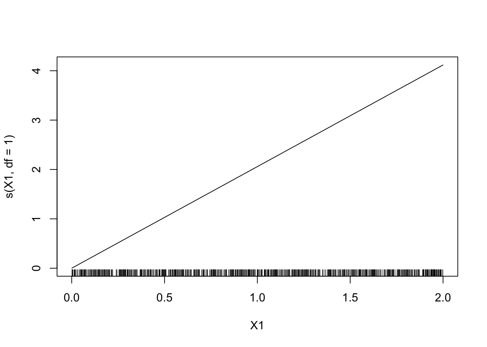
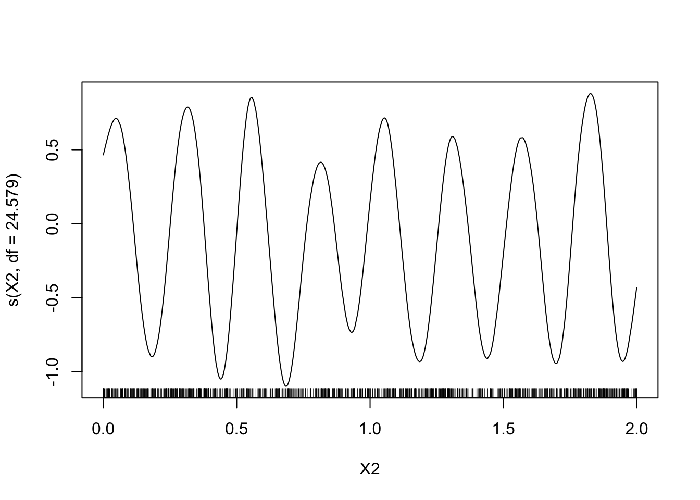
Faire varier les degrés de liberté, interpréter.
On prend d’abord peu de degrés de liberté.
model2 <- gam(Y~s(X1,df=0.001)+s(X2,df=0.001)-1,data=donnees) plot(model2)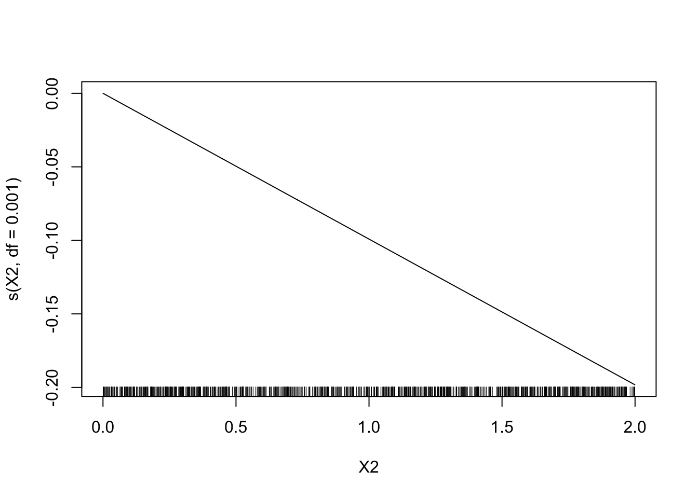
Le sinus n’est pas bien estimé. On prend maintenant un grand nombre de degrés de liberté.
model2 <- gam(Y~s(X1,df=100)+s(X2,df=100)-1,data=donnees) plot(model2)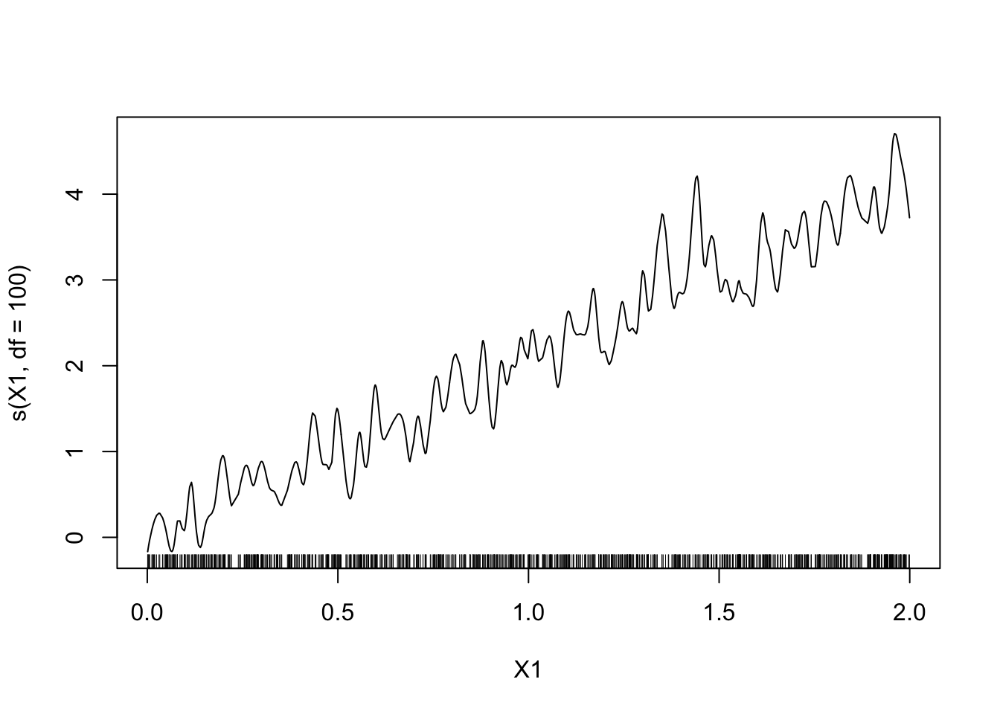
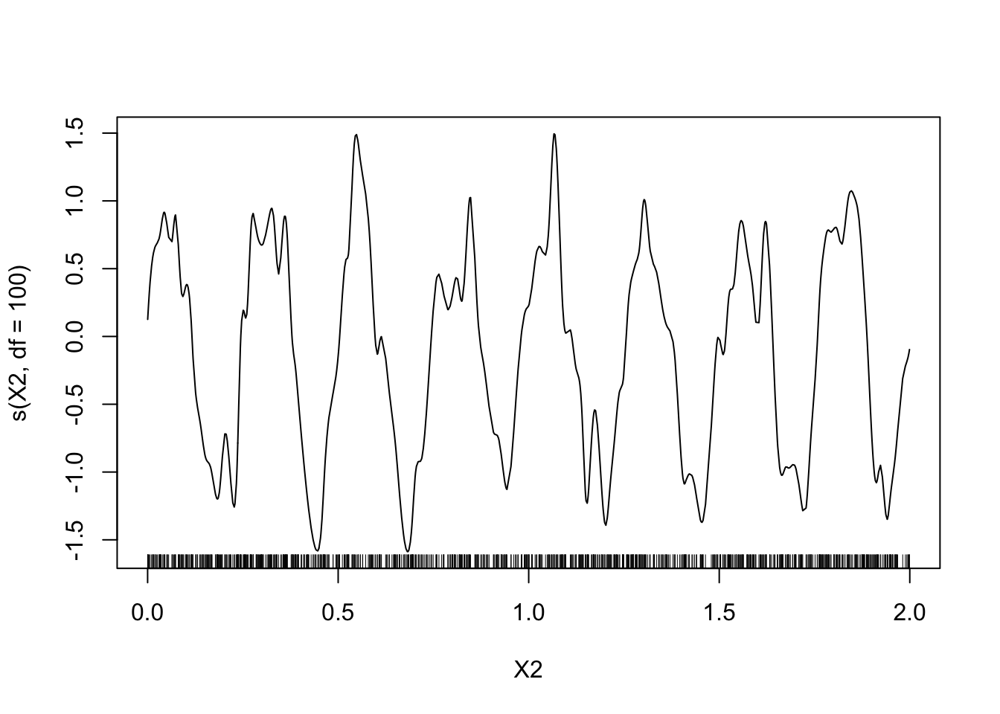
Le modèle est trop flexible, risque de sur-ajustement.
Faire le même travail avec le lisseur loess. On commencera avec
degree=2etspan=0.15puis on fera varier le paramètrespan.model4 <- gam(Y~lo(X1,span=3)+lo(X2,span=0.15,degree=2)-1,data=donnees) plot(model4)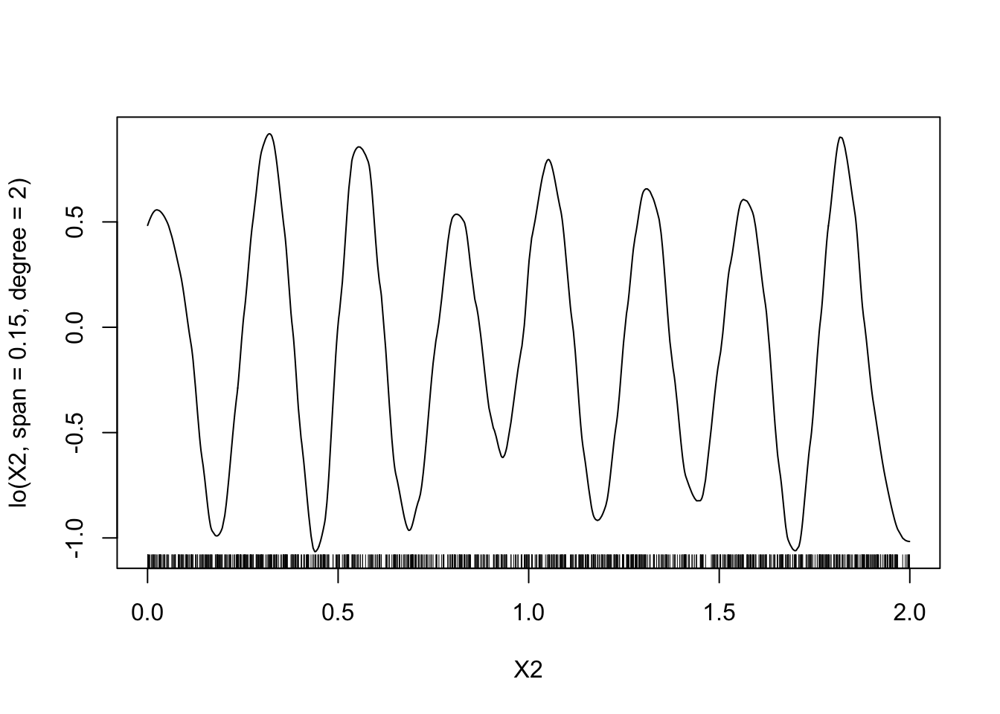
On fait varier
span:model5 <- gam(Y~lo(X1,span=5)+lo(X2,span=5,degree=2)-1,data=donnees) plot(model5)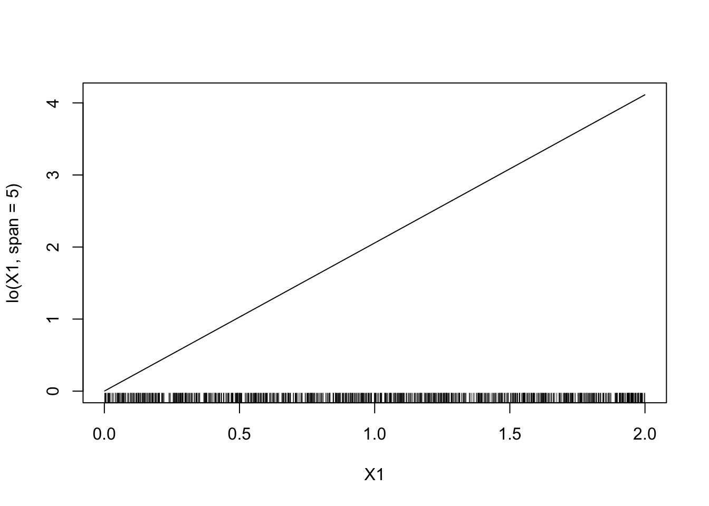
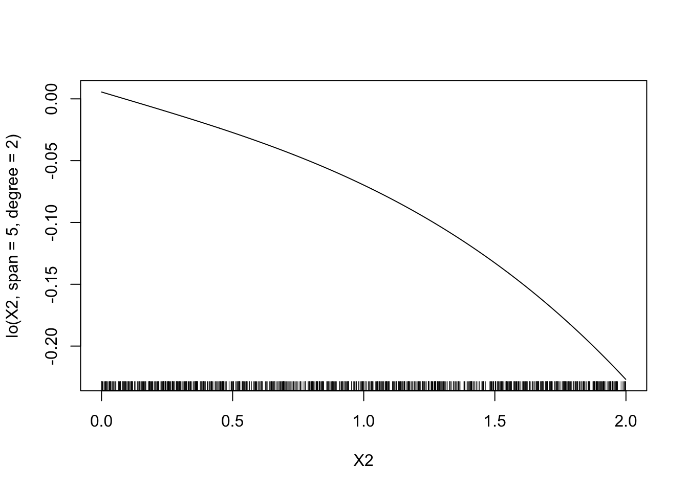
model6 <- gam(Y~lo(X1,span=0.01)+lo(X2,span=0.01,degree=2)-1,data=donnees) plot(model6)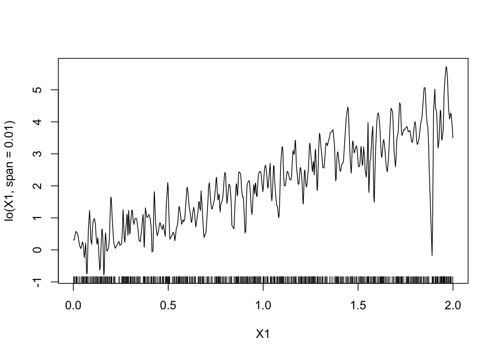
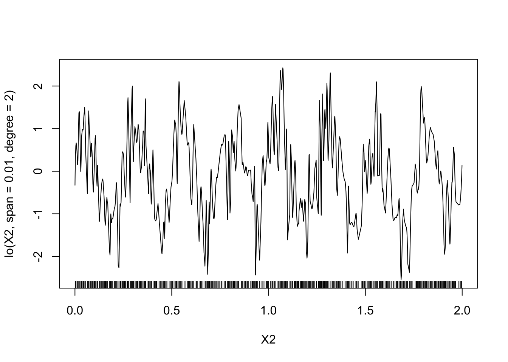
On a les mêmes remarques que pour les splines.
Estimer le degrés de liberté avec la fonction
gamdu package mgcv (Il n’est pas nécessaire de charger le package pour éviter les conflits).mod.mgcv <- mgcv::gam(Y~s(X1)+s(X2),data=donnees) plot(mod.mgcv)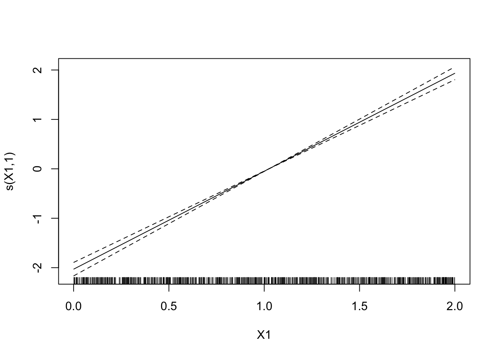
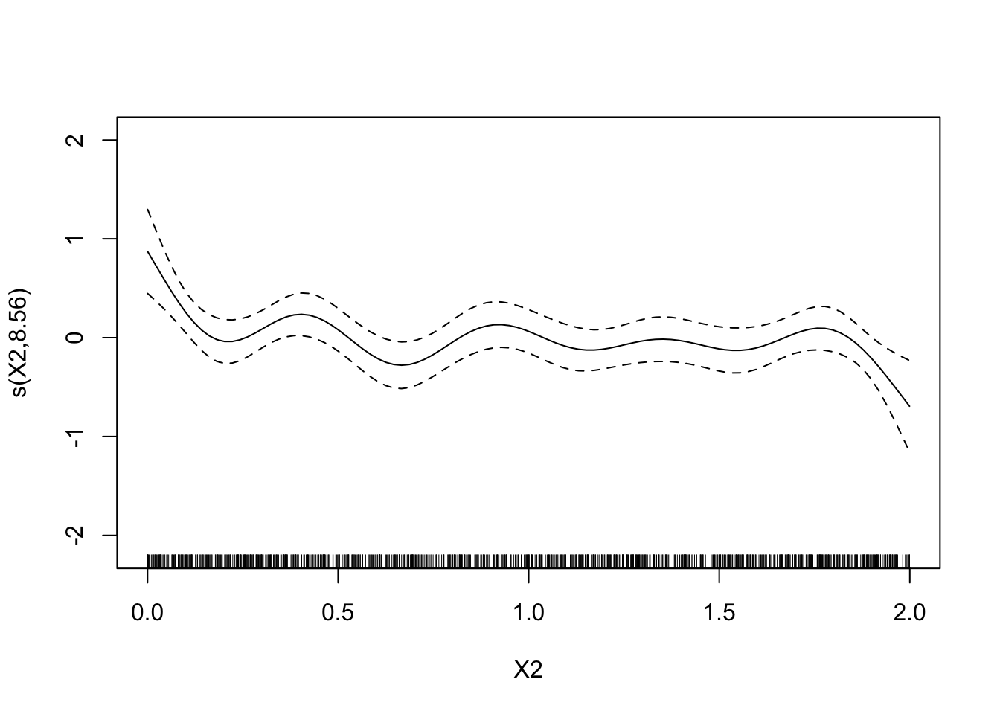
4.3 Régression logistique additive
On considère le jeu de données panne.txt qui recense des pannes de machine (etat=1) en fonction de leur âge et de leur marque.
Faire une régression logistique permettant d’expliquer la variable
etatpar la variableageuniquement. Critiquer le modèle.panne <- read.table("data/panne.txt",header=TRUE) mod1 <- glm(etat~age,data=panne,family=binomial) summary(mod1)Call: glm(formula = etat ~ age, family = binomial, data = panne) Deviance Residuals: Min 1Q Median 3Q Max -1.253 -1.199 1.015 1.183 1.210 Coefficients: Estimate Std. Error z value Pr(>|z|) (Intercept) -0.10748 0.59864 -0.180 0.858 age 0.03141 0.09117 0.345 0.730 (Dispersion parameter for binomial family taken to be 1) Null deviance: 45.717 on 32 degrees of freedom Residual deviance: 45.598 on 31 degrees of freedom AIC: 49.598 Number of Fisher Scoring iterations: 3Le modèle n’est pas pertinent. On accepte la nullité du coefficient
age, ce qui signifie que le modèle constant est meilleur que le modèle avec la variableage.Ajuster un modèle additif, toujours avec uniquement la variable
age.mod.panne <- mgcv::gam(etat~s(age),data=panne) plot(mod.panne)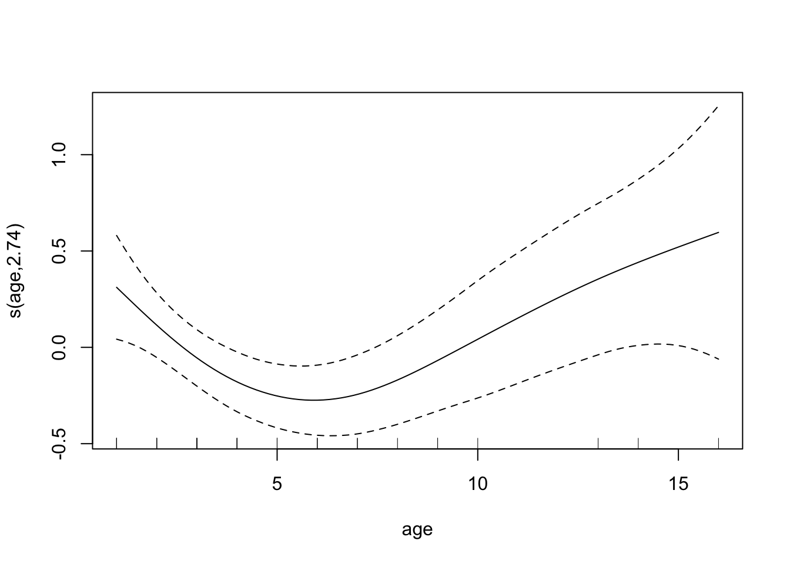
En utilisant le modèle additif, proposer un nouveau modèle logistique plus pertinent.
Il semble que l’âge agisse de façon quadratique. Cela peut s’expliquer par le fait que les pannes interviennent souvent au début (phase de rodage) et à la fin (vieillissement de la machine).
mod2 <- glm(etat~age+I(age^2),data=panne,family=binomial) summary(mod2)Call: glm(formula = etat ~ age + I(age^2), family = binomial, data = panne) Deviance Residuals: Min 1Q Median 3Q Max -1.54043 -0.74739 0.00033 0.64877 1.88091 Coefficients: Estimate Std. Error z value Pr(>|z|) (Intercept) 4.18501 1.73860 2.407 0.01608 * age -2.03343 0.77401 -2.627 0.00861 ** I(age^2) 0.17601 0.07044 2.499 0.01247 * --- Signif. codes: 0 '***' 0.001 '**' 0.01 '*' 0.05 '.' 0.1 ' ' 1 (Dispersion parameter for binomial family taken to be 1) Null deviance: 45.717 on 32 degrees of freedom Residual deviance: 31.279 on 30 degrees of freedom AIC: 37.279 Number of Fisher Scoring iterations: 6On remarque ici que l’âge devient “significatif” !